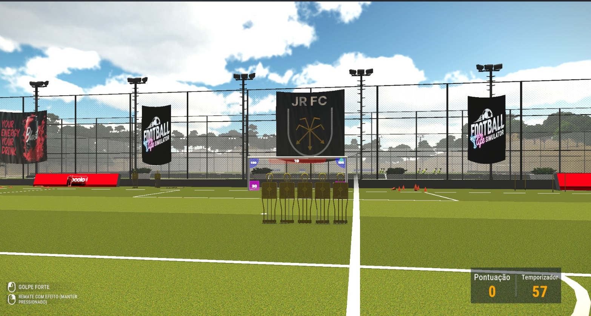

Sinopse: Viva a vida de um jogador de futebol profissional tanto dentro quanto fora de campo.Treine, jogue partidas, gerencie sua vida social, suba na carreira e gaste o dinheiro que conquistar. Decore sua casa com luxo enquanto administra relacionamentos e finanças.
Vale destacar que este é o primeiro jogo da Ludu Arts, um estúdio indie da Turquia. Isso já torna o projeto corajoso e interessante, especialmente por ser uma estreia com uma proposta tão ambiciosa.
Football Life Simulator traz uma proposta que eu nunca tinha visto em outros jogos de futebol: o foco na vida fora das quatro linhas. E isso, ele entrega bem. É possível visitar locais da cidade, explorar a casa do jogador, treinar tanto em campo quanto na academia. E com a recente atualização, não é mais necessário repetir essas tarefas todo dia — agora é possível montar uma agenda e focar mais nas partidas.
Por ser um jogo indie e ainda estar em desenvolvimento, há limitações. A gameplay é restrita à posição de atacante, com apenas quatro atributos disponíveis (chute, técnica, drible e posicionamento). Durante os jogos, você depende de quick time events e de certa sorte para que algo relevante aconteça na sua gameplay, o que pode ser frustrante às vezes. Ainda assim, como simulação da vida de um jogador, o jogo acerta.
Outro ponto positivo foi a presença de clubes brasileiros, com nomes fictícios para evitar problemas com direitos autorais — joguei com o Volta Redonda. O único detalhe que achei confuso foi o sistema da Série B: são 16 times e apenas 3 sobem, o que talvez indique pouco conhecimento sobre o calendário brasileiro.
Os gráficos não são feios, mas também não impressionam. Estão no meio-termo, o que é compreensível para um estúdio indie. Um ponto que poderia ser melhorado é a repetição dos ambientes — estádios, centros de treino e afins acabam sendo os mesmos em várias situações, o que prejudica um pouco a imersão.
A trilha sonora é simples e pouco marcante, mas há um detalhe que merece elogio: os cantos da torcida foram dublados em português, com gritos bem característicos. Provavelmente foi usada inteligência artificial nessa parte, e o resultado ficou legal — especialmente para um jogo indie que busca se adaptar à cultura do país escolhido para o campeonato.
A história tem potencial. O uso de IA nas conversas com NPCs é um diferencial interessante — você pode interagir livremente e até sugerir falas. Isso traz um nível de imersão que poucos jogos têm. No entanto, ainda faltam elementos para deixar tudo mais vivo: mais caminhos de carreira, notícias dinâmicas, repercussão das entrevistas após os jogos... A base está feita, mas precisa ser expandida.
O jogo é leve, tem tradução para o português e rodou sem problemas graves no meu PC. Porém, alguns bugs apareceram — o principal aconteceu após a última atualização, quando coloquei a semana para simular e acabei pulando o jogo da rodada. Como essa era a principal novidade da atualização, senti falta de testes mais rigorosos. Por estar aprendendo desenvolvimento de jogos, sei que esse tipo de bug pode ser evitado com mais atenção.
Football Life Simulator é uma estreia promissora da Ludu Arts, um estúdio indie da Turquia que se propôs a inovar na forma como jogamos futebol virtual. Ao invés de focar só nos 90 minutos em campo, ele traz a experiência completa da vida de um jogador — treinos, rotina, vida social e carreira.
Apesar das limitações técnicas, bugs pontuais e gráficos medianos, a base é sólida. A mecânica diferenciada e o uso criativo de IA para simular interações e localização mostram que há paixão e boas ideias por trás do projeto.
Se os desenvolvedores continuarem nesse ritmo, ouvindo o feedback da comunidade e expandindo as opções de carreira e gameplay, esse jogo pode se tornar um dos grandes nomes no gênero de simulação esportiva. Para um primeiro jogo indie, é um chute inicial muito bem dado.
Nota: 73
Voltar para a página principal